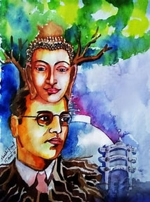

Dr.Ambedkar & Gautam Budhha
Studying Buddhism and Buddha’s ethics vastly has been one of the major concepts of case studies for Ambedkar as
he believed that would lead him to freedom from the chains of class and caste which his religion bound him to.
The Hindu religion, which is what the majority of India follows, has always been in the clutches of the curse of
the caste system from older times. Even now after thousands of generations, many poor souls have suffered
because of it. Belonging to the Dalit class from birth, Ambedkar had always felt like a victim of the society’s
caste discrimination, which ended up with him in fighting for his freedom by pursuing education, and ultimately
converting to Buddhism. One may question why Ambedkar chose Buddhism and not Christianity, Jainism, or Islam; in
response to which Ambedkar wrote many books and essays explaining his theories.
In his essay, “Buddha and future of his religion”, Ambedkar elaborates on his case study and the reason why he
chose Buddhism rather than any other religion. He compares Christ, Mohammad, along with their teachings to that
of Buddha and his teachings. Ambedkar states that Buddha never claimed to be the giver of salvation nor was he a
godsent prophet; unlike Christ who secured his place in Christianity by having the condition that one could
achieve salvation only by accepting him to be the son of God. Mohammad also claimed to be the holy prophet and
only accepting him as such would bring one salvation. Ambedkar also compares Krishna’s directions with Buddha’s
ethics. Unlike Christ and Mohammad, Krishna went further and claimed himself to be ‘parmeshwara’, one who is
higher than god. Buddha simply introduces himself as the son of Suddhodana and Mahamaya - and does not secure
his place in his religion by carving out his importance in it - notes Ambedkar.
Buddha says he is the one who leads a path to salvation, but one must make the choices of his life on his own.
He is the Marga Data (Way Finder) and not Moksho Data (Giver of Salvation). Buddha describes that the purpose of
religion is to reveal the fact that it is one’s own duty to save the soul that has been given to him by his
maker (i.e., God). This message is sent by God through a chosen one, and that eventually turns into a religion.
Buddha never claimed himself to be the messenger of God, while the prophet or the son of God promises to be the
giver of salvation. Buddha claimed that his message was a message from one human to another and he was no divine
being nor played any part in God's plan. Ambedkar also compares Moses with Buddha since the former claimed to
have a divine origin of his teachings, referring to them as messages sent by Jehovah, the God.
How does the world know of the teachings of Buddha and what do his ideologies stand for? There are many ways of
viewing this. Some may take Samadhi to be his principal teachings and to some, it may be Vipassana. Metaphysics
and mysticism contrast with each other. People wonder about what Buddhism is based on, which brings out the
question: what exactly is the social message of Buddha, or if there is any at all? Many questions related to
this arise, such as if Buddha taught about love, justice, equality, liberty, fraternity, and so on.
In his book 1 Part 4 Enlightenment and the vision of a new way, Ambedkar portrays the struggles that Buddha -
going by Gautama before his enlightenment - faced in the search for enlightenment. He went through four stages
from four weeks of meditations to reach a conclusion. Inspired by the Shankhya philosophy, he realised that
unhappiness and suffering are inevitable and the way to find relief from it was not a part of Shankhya
philosophy; but he came out with a way to surpass the misery and that was by Samma Bodhi (Right Enlightenment).
Ambedkar also includes in his book the path for a Bodhista to becoming Buddha, where a Bodhista has to live ten
lives as a Bodhista to become a Buddha. Those include Mudita (joy) as the first life, Vimala (purity) as the
second; following with third life and the fourth lives as Pravakari (brightness) and Arcishmati (intelligence of
fire). In his fifth life which is the Sudurjaya (difficult to conquer), he understands the link between what is
relative and what is absolute. Following this comes his sixth life, Abhimukhi, and his seventh life that is
Durangama (going far off) where a Bodistha becomes greater than time, and space, and becomes equal to infinity.
At this point, he becomes detached from the desires of the world. Then come the eighth and ninth stages of life
which are Acala and Sadhumati. After this follows the tenth and final stage that is Dharmamegha where one
achieves the ‘infinite eye of a Buddha’.
In Part three ‘What is Dhamma’, Ambedkar notes down every element of Buddha's Dhamma and distinguishes between
them for classification. Buddha's Dhamma consists of three parts; which are the Dhamma, Not-Dhamma (Adhamma),
and the Sadhamma, which consists of the philosophical meaning of the Dhamma.
Ambedkar explains that Buddha’s Dhamma stands for the achievement of the purity of life by achieving purity of
body, speech, and mind. Purity of the body can be achieved by harming no other living body/soul and rejecting
any sensual desire. The purity of speech is achieved by being truthful to oneself and others. By being aware of
the malevolence and emotion of his own and accepting it and then abandoning those emotions and feelings, one can
achieve purity of the mind. Dhamma strives to reach perfection in life. One may succumb to the human weaknesses
that hold them down; such as lusting after what is not given, taking a life, or indulgence in liquor from
achieving purity, Ambedkar points out. Overcoming these obstacles ultimately leads one to achieve perfection in
life. And that, according to him, is what stands for Dhamma.
Ambedkar claims Nibbana to be the central doctrine of Buddha, the main motive of Dhamma; and that to live life
in Nibbana is to live life in peace. Nibbana brings real happiness as the Buddha suggests. Ambedkar brings light
to the difference of belief on what Nibbana is, comparing Laukik, Vadic, Brahmanic and Upanishadic
interpretations to that of Buddha’s doctrine. It is the salvation of the soul by finding peace. The salvation of
the soul and recognising it as the independent entity is the concept of the Brahmanic belief. Buddha denies
recognition of the soul as a part of Dhamma, hence rejecting Brahmanic beliefs and the Upanishads, which include
the recognition of the soul. The Laukik view did not appeal to Buddha as it showed the materialistic, not
spiritual, need of humans. Ambedkar points out that Buddha saw the yogic concept of Nibbana to be futile and
temporary until the yoga lasted, bringing no pain but also no joy. Ambedkar describes Buddha’s doctrine to be
one of absolute detachment. In the view of Buddha, happiness should come before the desire to achieve salvation
of the soul. One must seek happiness by “being in Samsara while he is alive”. The salvation of the soul was a
foreign concept to Buddha’s doctrine, states Ambedkar. Leading this was the third concept of Buddha’s Nibbana,
to keep in check one's passion, as it is like a flame - “which is always on fire”. The suppression of appetite
should be done to bring happiness since with appetite comes an increase in said appetite. One should keep a
limit to his wants. Though having new things brings happiness for the moment, it also brings unhappiness later
on. He says that a man is always in want, and that leads him to be always unhappy. He is still unhappy even if
he has more than enough for him because he never stops to know why. This, he explains, is the concept of greed.
One's greed and never-satisfied appetite for materialistic things evade him from reaching Nibbana. Buddha talks
about passion being the most forceful way to make a man lose his path to Nibbana and happiness. Being prey to
his passion makes a man unhappy. The forms of passion are divided into groups. Lust, greed, and infatuation come
in one category of man losing his happiness. Hatred, anger in a man makes him ultimately lose his happiness and
eventually the path to Nibbana. Being ignorant and dull also leads to one losing his path to salvation.
Ambedkar throws light on Buddha’s doctrine of impermanence through the great Buddhist philosopher Asanga. There
is the impermanence of composite things, individual beings and the self-nature of the conditions of an
individual thing, as portrayed by Asanga, “all things are produced by the combination of causes and condition,
and have no independent noumenon of their own. When the combination is dissolved, their destruction ensures”.
“The body of a living being consists of the combination of four great elements--viz., earth, water, fire and
air--and when this combination is resolved into the four component elements, dissolution ensues. This is what is
called the impermanence of a composite entity.”